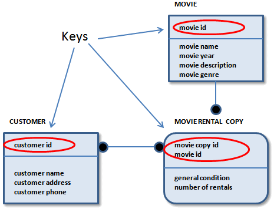

A key-based (KB) model is a data model that fully describes all of the major data structures that support a wide business area. The goal of a KB model is to include all entities and attributes that are of interest to the business.
As its name suggests, a KB model also includes keys. In a logical model, a key identifies unique instances within an entity. When implemented in a physical model, a key provides easy access to the underlying data.
The key-based model basically covers the same scope as the Entity Relationship Diagram (ERD). However, it exposes more of the detail, including the context where detailed implementation level models can be constructed.

This section contains the following topics
Relationships and Foreign Key Attributes